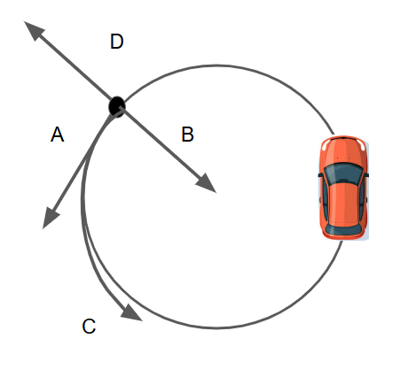

A 5 kg block is pulled across a horizontal surface with a force of 20 N. If the coefficient of kinetic friction is 0.3, what is the acceleration of the block?
Which of the following best describes Newton's Third Law?
An object of mass 2 kg is suspended by a string and remains at rest. What is the tension in the string?
When a car accelerates forward, what is the direction of the frictional force on the tires?
A 10 kg object is falling through air and reaches terminal velocity. What is true about the net force on the object?
A 2 kg object is dropped from rest. What is the force acting on it due to gravity?
Which of the following is not a fundamental force in nature?
A force of 50 N acts on a 25 kg object. What is its acceleration?
If the net force on an object is zero, the object must:
What is the net force on a 10 kg object accelerating at 3 m/s²?
An object is moving in a circle at constant speed. What type of acceleration does it experience?
A 3 kg block experiences a net force of 12 N. What is its acceleration?
An object is going counter clockwise in a circle. Suddenly the ground turns to ice and there is no friction between the ice. What describes the path at point Z where the track turned to ice.
A 10 kg crate is pulled with a force of 40 N on a surface with a coefficient of kinetic friction of 0.2. What is the net force?
What is the direction of the frictional force relative to motion?
A 4 kg object is acted on by two horizontal forces: 30 N to the right and 10 N to the left. What is the object's acceleration?
An elevator is moving upward and slowing down. What is the direction of the net force?
A block is sliding down a frictionless incline at 30°. What is its acceleration?
If a 12 N net force is applied to a 3 kg object initially at rest, what is its velocity after 4 seconds?
A 6 kg box is pulled by a string at an angle of 30° above the horizontal with a tension of 60 N. What is the horizontal component of the force?
A net force causes an object to accelerate. If the mass of the object is doubled, the acceleration will:
A 50 N object is suspended from two ropes at equal angles of 60° from the ceiling. What is the tension in each rope?
What is the purpose of a free-body diagram in dynamics?
A 3 kg object on a frictionless table is connected to a 2 kg hanging mass by a string over a pulley. What is the acceleration of the system?
The function of velocity is given as v(t) = 4t² and there is a mass of 5 [kg]. what is the force at t=2?
A block of mass m is pushed with a force F up a frictionless incline. What is the expression for its acceleration?
If two objects interact via Newton’s Third Law, which of the following is always true?
What happens to the normal force when an object is on a frictionless incline compared to a flat surface?
Which force is responsible for centripetal acceleration in a car in circular motion with a bank thats not ideal?
A 4 kg object moving at 6 m/s hits a wall and stops in 0.2 seconds. Acceleration was constant during the whole trip. What is the force that was applied?